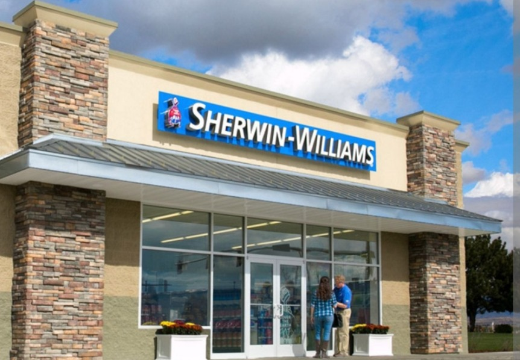

You've spent fifteen years walking into paint stores across your region, learning which painters are serious and which ones skip prep. You know which crews come in Monday morning with a Cashmere order for Tuesday's kitchen repaint and which ones swing by Saturday asking for the cheapest gallon in stock. You built those relationships. Nobody at corporate did. VoiceClaw helps your top painters stay findable in the AI-assistant era, subsidized through PaintPerks Preferred Contractor credit, with per-painter paint-volume-lift attribution you can take to your next QBR.
Skip to the pilot math for a 5-painter / 6-month case →
Pilot-market-first. One region, 5 to 10 painters, 6 months, reversible. Subsidy sits in PaintPerks Preferred Contractor credit, not a new procurement line.

The Q3 number your VP asked about.
Benjamin Moore's regional team is pushing harder every quarter. PPG is piloting contractor programs you haven't seen yet. Home Depot Pro keeps chipping at the commodity end. And your VP wants a digital painter story at the next QBR you don't have yet. Underneath all of it, AI assistants are starting to book painters for homeowners before they ever open a Google tab. Your top painters don't know their lead mix is shifting. You don't know it either. When the wallet follows, it shows up in your Q3 numbers as an unexplained drag.
Benjamin Moore's rep is in the same painter's truck tomorrow. PPG is quietly subsidizing spec-changes on new-construction jobs. Home Depot Pro takes the bulk commodity orders when painters price-match. Amazon Business handles the last-minute rush gallon. Each loss is small; the aggregate is a quarter-point drag on regional paint-volume revenue that you can't attribute cleanly to any single competitor.
Every QBR has a slide titled something like "contractor-tech initiatives." You've been handed a mandate: show progress on the digital contractor agenda. Every vendor in your inbox is pitching the same thing. Most will be gone in a year. Your VP knows it's working. Your CFO wants the math. You need something real that ties to your number, not another pilot that dies in the middle.
Homeowners are asking ChatGPT, Perplexity, and Google AI to find painters before they open a Google tab. Homeowners book three estimates based on what they see online and pick middle price. Your top painters look the same online as the chuck-in-a-truck operators with a sprayer and a Craigslist ad. Their inbound-estimate mix is shifting silently. By the time their paint spend moves, your Q3 is already soft and you can't reverse it mid-year.
Your painters don't change how they buy. Your paint stores don't change how they sell. You get per-painter paint-volume-lift attribution, not faith, in time for your next QBR. Here's how it compares to the vendors already in your inbox.
|
Recommended
VoiceClaw
|
Generic answering service | Painting CRM vendor | Build-in-house | |
|---|---|---|---|---|
| Who pays | Painter direct, SW subsidy through PaintPerks credit | Painter direct | Painter direct | Sherwin-Williams capex |
| Attribution to your P&L | Per-painter paint-volume lift | None | Indirect | Depends on build |
| Paint-store workload | Minimal | Low | Moderate (training) | High |
| Multi-brand neutrality | Yes. Painter can buy wherever. | N/A | Varies | SW-only (painter resistance) |
| AI-assistant discoverability for the painter | Built in, structured data from day one | No | No | Would need to build separately |
| Pilot structure | 5-10 painters, 6 months, reversible | Per-painter rollout | 12-month contract typical | 12-24 month build |
| Time to QBR-ready numbers | Two quarters | Unclear | Four-plus quarters | Six-plus quarters |
$79 per month. Anchored to what painters already pay Jobber, Housecall Pro, or PaintScout. No new procurement line on your side. The painter's billing relationship is with the vendor, not with SW. That protects the multi-brand-neutrality position your painter customers trust.
Pilot tuning: a $5,000-per-month SW paint-spend threshold unlocks the full $79 monthly rebate through PaintPerks Preferred Contractor credit. Graduated tiers are an option if you want finer control (25% rebate at $2-3K, 50% at $3-5K, 100% at $5K+). The rebate lives in your existing PaintPerks loyalty structure. Not a software-procurement conversation.
Each pilot painter's monthly SW paint spend is measured against a pre-pilot baseline. Lift attributable to the VoiceClaw subsidy shows up in a monthly report you can drop into a QBR slide. Two quarters of clean data. Math, not faith.
5 to 10 painters in your region. 6 months. If the numbers don't land, the pilot ends. No multi-year commitment. No national rollout without regional proof. Your paint stores don't train on anything new. Your reps don't change their motion. The only people whose workflow changes are the pilot painters themselves, and only to answer more calls and book more jobs.
Numbers for a 5-painter, 6-month pilot in one region. Sensitivity and assumption notes below. These figures are a working sketch to anchor a first conversation, not a negotiated commitment.
The $2,370 subsidy sits comfortably inside any Regional Manager's discretionary authority at a company Sherwin-Williams's size. It's not a capital expenditure. It's not a software procurement. It's an existing rebate-line decision with a measurable return.
SW gross margin on paint assumed at 40% per public 10-K filings (SW is a manufacturer-retailer hybrid, stronger margins than pure distributors). Painter share-of-wallet shift modeled at $1,000-2,000/month incremental SW spend. Both assumptions are tunable; both are defensible on sensitivity.
The number you defend to your VP in the Q2 QBR as validated regional momentum.
The story your VP takes to the CFO after two quarters of regional-pilot validation.
The subsidy is the explicit mechanism. But the painter's buying behavior also shifts in six structural ways that are worth naming explicitly before any QBR conversation.
Pilot painters can opt into SW-preferred product defaults when VoiceClaw qualifies an inbound job and feeds the estimate template. Interior line, exterior line, sheen selection. The painter overrides when it matters; the defaults nudge share-of-wallet when it doesn't.
"PaintPerks Preferred Contractor" badge on pilot painters' VoiceClaw-built sites. Homeowners see the signal. Painters get the legitimacy. SW gets the brand surface at the homeowner-discovery moment.
Preferred Contractor status, licensed and insured, PCA Accredited if held, years in business. Surfaced in search results, AI-assistant answers, and the painter's Google Business Profile. SW's loyalty tiers become visible where homeowners actually decide.
When VoiceClaw helps qualify a job and feeds an estimate template, SW product lines populate by default where the painter hasn't specified. Homeowner-visible line items. Painter can override; most won't on commodity items.
Reroutes the SW subsidy through your existing loyalty infrastructure. The painter's monthly $79 becomes a PaintPerks line he already watches. Measurement, attribution, and budget authority all live in the program you already run.
Per-painter paint-volume baseline versus post-pilot spend. Lift attributable to the subsidy, measured and reported monthly. The data lives between VoiceClaw and SW. Benjamin Moore or PPG can't reproduce the attribution without reproducing the pilot.
Three reasons. First, an SW-only tool would fail with the painter cohort that also buys Benjamin Moore, PPG, and Home Depot Pro on certain jobs. Those painters wouldn't adopt a walled-garden solution. Multi-brand neutrality is the moat that makes painter adoption possible. Second, building takes 18-24 months of engineering; the AI-discoverability shift is happening in 2026-2027. By the time you ship, your painters' inbound-estimate mix has already moved. Third, software isn't SW's core business. PaintScout, Jobber, and Housecall Pro all beat paint-brand-adjacent contractor software because they could focus. Subsidizing a neutral vendor that lifts your share-of-wallet is structurally safer than building in-house.
The pilot ends. No multi-year commitment. No national rollout obligation. The 5-10 pilot painters keep their sites and keep paying the $79 monthly themselves, or cancel. Your $2,370 subsidy is spent. The attribution data lives in your internal BI either way. Worst case for you: a clean QBR slide that says "we tested it, the math didn't work, here's what we learned." Better than most pilots you've seen.
No exclusive. Ever. Multi-brand neutrality is structural. The product has to work across paint brands or painters won't adopt it. SW can run PaintPerks-branded pilots in your regions. Benjamin Moore or PPG could run their own parallel pilots in their regions. The attribution is per-partner, so each partner owns its own data. First-mover advantage is real (you get the pilot data first, the QBR story first, the case study first) but exclusivity isn't on the table.
Nothing operational. Store managers don't train. Counter staff don't pitch. Inside sales doesn't call-down a list. The pilot painters are identified by you and your top store managers based on who would benefit, then onboarded directly by VoiceClaw in a single 5-minute phone call. The stores see the PaintPerks spend tick up over the pilot months as the mechanism works. That's the extent of store involvement.
SOC 2 Type I is on the roadmap pre-national-scale. For the pilot phase: pilot painters own their own customer data; SW sees aggregate, anonymized paint-volume attribution, not homeowner-level data; no PII flows to SW. Call recordings stay with the painter. Attribution flows are auditable. Data-processing agreement and standard privacy addendum available on request before the pilot signs.
Pilot kickoff in a given quarter produces a baseline month of painter paint-volume data, then four to five months of post-pilot data, with a clean attribution report delivered two weeks before your next QBR. The metrics roll up to "participating-painter SW-spend lift," which fits directly into your existing regional revenue narrative without needing a separate slide category. The 6-month window is designed around your rhythm, not imposed on it.
The Model B mechanism is conceptually applied across trades, with partner-specific attribution kept confidential between us and each partner. SW is where the active implementation work is concentrated. Comparable structural work is available for review if you want to see how the mechanism generalizes; partner-specific data stays between us and them.
5 to 10 pilot painters. 6 months. $2,370 subsidy inside your discretionary PaintPerks authority. One clean QBR slide at the end. You stay focused on your region. We make sure your top painters stay findable before Benjamin Moore or PPG even notice the problem.
Warm introduction from a manufacturer partner or an SW peer is welcome. Cold outreach works too.